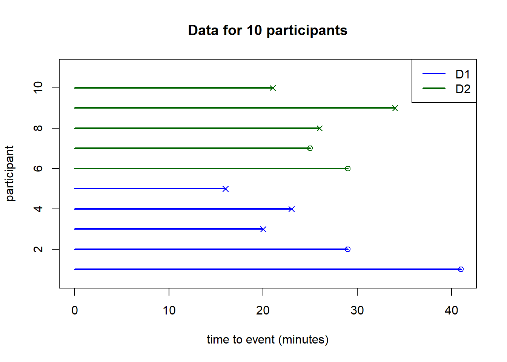
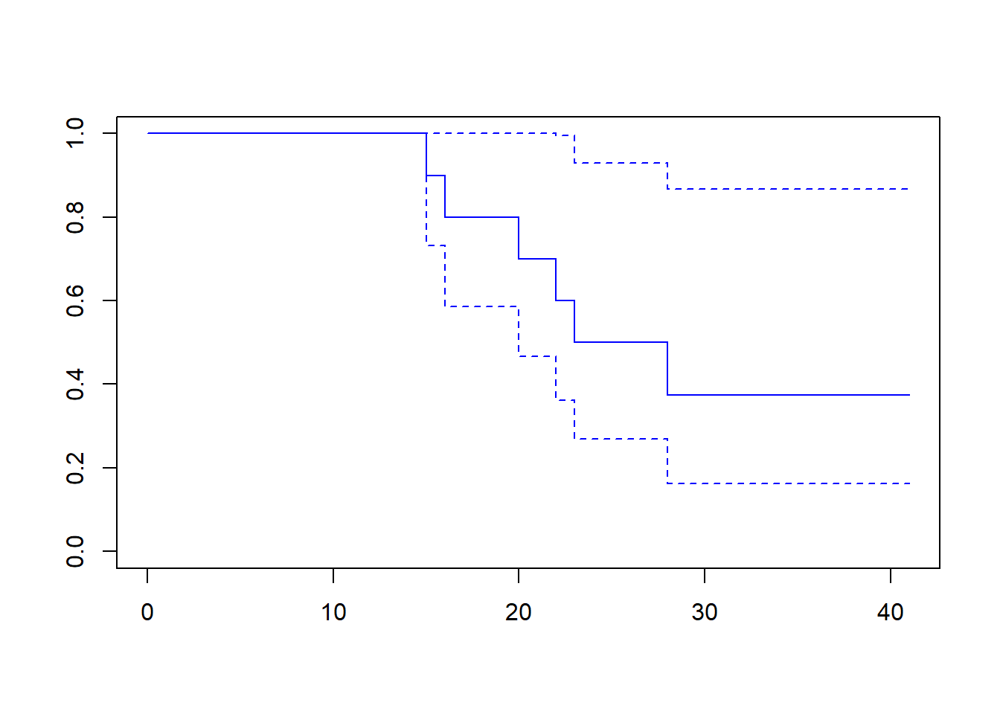
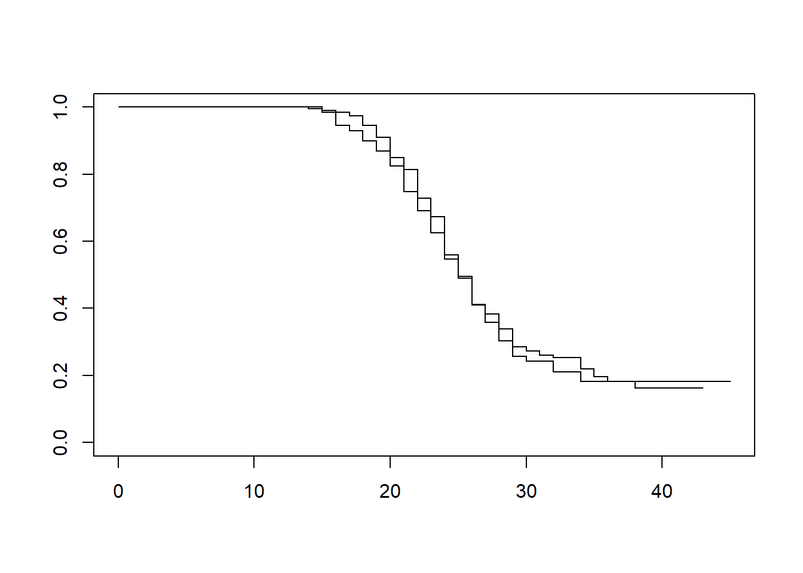
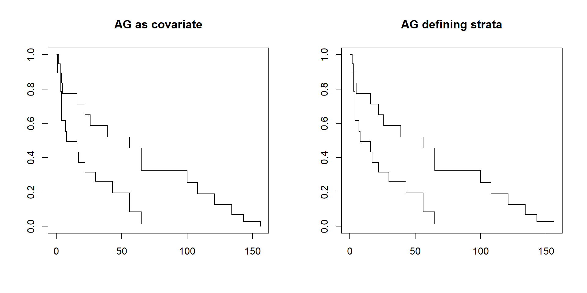
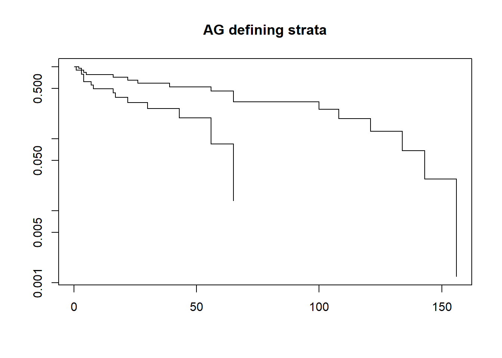
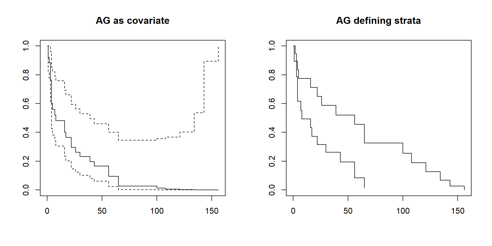
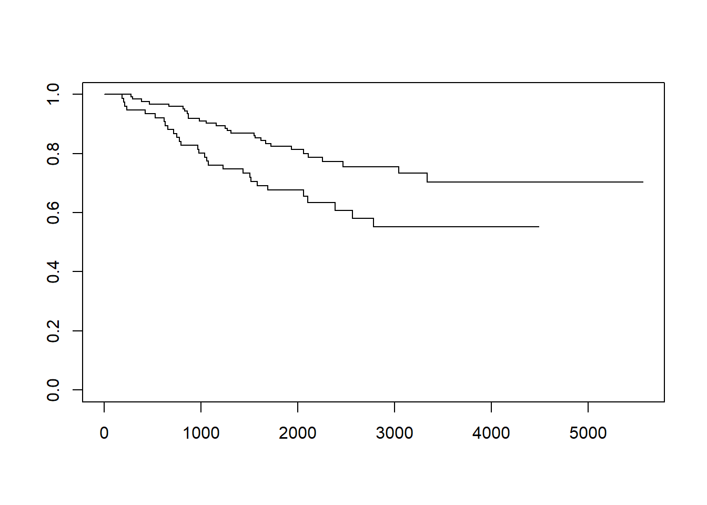

Chapter 5 Survival analysis
5.1 Survival data - Introduction
5.1.1 Motivation
A migraine study wants to evaluate the time to recovery given a new drug (D2), compared to a commonly used drug (D1). Patients with migraine are invited to take part in the study, where they are randomized into two groups, each given one of the drugs. In each group, participants must take the drug they are given shortly after a new migraine episode starts. They record the time of taking the drug, and the time the migraine has stopped. In the course of the study, some patients could not record the time of recovery as they fell asleep before it happened. In such cases, all patients recorded that they had recovered by the time they woke up.
The response in this case involves the event observed, recovered or not after a single dose of the assigned drug, as well as the time to event. The explanatory variable is the drug received. Of course, it is possible to analyse the association between each of the two variables with the drug used separately from each other, but doing this ignores important issues. Firstly, the event observed (recovered or not) may be related to the time to event. Secondly, there is interest in drawing conclusions for the combination of event as well as time-to-event variable, instead of for them separately. So, there is interest in considering the two variables as a single response. Indeed, a model that takes both event as well as time-to-event into account at the same time has more power to find effects than one that analyses the two variables separately. In addition, it yields conclusions about effects on both variables at the same time.
Another important aspect is that, for some participants, the precise time at which recovery happened was not recorded, but it is known to have been after a certain time point. This means that the time-to-event is not precisely known, but known to be at least a certain value, for these participants. Such observations are said to be censored.
We will now see how to analyse such a response variable, formed by a combination of an event variable with the time-to-event, where sometimes the time-to-event is not precisely known.
5.1.2 Working example
Consider the migraine study with the two drugs. The time-to-event is in this case the time (in minutes) between taking the assigned drug and the event. The event can be recovery (coded as 1) or fail (coded as 0), where the latter corresponds cases where the participant falls asleep without having recovered beforehand. Note that the time-to-event in case of a fail event is recorded as the time between taking the drug and the last moment the participant is known to not having recovered, which is when the participant fell asleep. As such, the time-to-event is at least as long as the time recorded, since migraine recovery may have recovered at any time while the participant slept.
set.seed(39562) # (493756)
ss <- 400
fdrug <- factor(rep(1:2, each = ss/2), labels = c("D1", "D2"))
event <- c(rbinom(ss/2, 1, prob = .7), rbinom(ss/2, 1, prob = .75))
tte <- round(rgamma(ss, shape = 30, rate = 1+event/4))
migraine <- data.frame(event, time = tte, drug = fdrug)
write.table(migraine, file = "migraine_data.txt", sep = "\t", row.names = FALSE)The observed data for a subset of 10 participants is as follows:
mydata <- rbind(migraine[1:5, ], migraine[(ss/2+1):(ss/2+5), ])
mydata## event time drug
## 1 0 41 D1
## 2 0 29 D1
## 3 1 20 D1
## 4 1 23 D1
## 5 1 16 D1
## 201 0 29 D2
## 202 0 25 D2
## 203 1 26 D2
## 204 1 34 D2
## 205 1 21 D2The data can be visualized in the following way:
#mydata <- rbind(migraine[1:5, ], migraine[(ss/2+1):(ss/2+5), ])
myxlim <- c(0, max(mydata$time))
mypch <- rep(4, nrow(mydata))
mypch[ mydata$event == 0 ] <- 1
plot(1, 1, xlim = myxlim, ylim = c(0.5, nrow(mydata)+1), col = "white",
main = "Data for 10 participants", xlab = "time to event (minutes)", ylab = "participant")
mcol <- rep(c("blue", "darkgreen"), each = nrow(mydata)/2)
for(xi in 1:nrow(mydata)) segments(0, xi, mydata$time[xi], xi, col = mcol[xi], lwd = 2)
for(xi in 1:nrow(mydata)) points(mydata$time[xi], xi, col = mcol[xi], pch = mypch[ xi ])
legend("topright", legend = c("D1", "D2"), lty = "solid", lwd = 2,
col = c("blue", "darkgreen") )
In the graph, the time point 0 represents the moment the participant took the drug for that migraine event, and the horizontal line indicates the period during which the participant’s migraine is known to have persisted. The right-hand point where the line ends includes a symbol representing the event observed: x indicates a recovery event, and o indicates a fail event.
5.1.3 Kaplan-Meier curve
One of the most commonly used methods to analyse survival data is the Kaplan-Meier curve. It combines information from an event variable with the time-to-event to yield a probability of survival per time point. Originally called the product limit estimator, it is a result of ideas proposed independently by E. Kaplan and P. Meier for publication by the Journal of the American Statistical Association, which by suggestion of the journal’s editor was combined into a single article published in 1958.
Here we will present an intuitive view of how the Kaplan-Meier curve is computed, and how it can be interpreted. More formal introductions are widely available, for example from chapter 12 of Peter Dalgaard’s book.
The Kaplan-Meier curve essentially yields an estimate of the probability of survival beyond each time point. By “survival” here we mean a time-to-event longer than the time point considered. A graph is produced using the estimated probabilities for multiple time points.
Such a probability of survival computed for each time point essentially is the proportion of individuals at risk of having an event just before the time point subtracted from the number of events at the time point, relative to all individuals. Note that the proportion of individuals at risk changes only when an event is observed, and the total number of individuals typically stays fixed. So, the Kaplan-Meier probability of survival estimates only changes at the time points where events are observed.
Censored observations (in the sense defined above) belong to the group of all individuals at risk during the entire duration of the study, since we essentially do not know anything about their time-to-event, except that it was larger than a certain time.
Computing the Kaplan-Meier curve does not require any assumptions about the data distribution (event or time-to-event), apart from the facts that event is a grouping variable (as it defines one of a set of known events, per individual) and time-to-event is a non-negative variable (as it represents time). This means it is a non-parametric method, and it makes it widely applicable.
5.1.4 Working example (cont)
We can illustrate this with the subset of the migraine study, where we first consider participants from a single group, thus making use of the same drug:
mydata <- migraine[1:10, ] #
mydata1 <- mydata[, -3]
mydata1## event time
## 1 0 41
## 2 0 29
## 3 1 20
## 4 1 23
## 5 1 16
## 6 1 15
## 7 0 23
## 8 0 31
## 9 1 22
## 10 1 28We can easily see how to obtain the estimated probability that the recovery takes longer than a given time, per time point. For any time point prior to the first event occurring, the probability of recovery taking longer than that time point is the number of participants at risk at that time point divided by the total of participants, so it equals 1. Subsequently, for each time point shortly before an event (recovery) is observed, the number of participants at risk decreases by the number of events, which equals 1. We illustrate this by displaying the computed survival probabilities below for the subset of the migraine data:
mydatas <- mydata1[order(mydata1$time), ]
nrisk <- nrow(mydatas) - cumsum(mydatas$event)[-c(3, 5)]
prob.surv <- nrisk/rep(nrow(mydatas), length(nrisk))
prob.surv## [1] 0.9 0.8 0.6 0.5 0.4 0.4 0.4 0.4The first two time points correspond to 1 event, but on the third time point 2 events are observed, explaining the larger drop.
Note that, for the time points corresponding to censored time-to-event observations, the probability did not change, as no event was observed. For those, no computation is needed.
Kaplan-Meier curves yield estimates for the survival probabilities. Confidence intervals are often obtained via what is called Greenwood’s formula. As the Kaplan-Meier curve, these are nonparametric estimates since they do not rely on any assumption about the data distribution.
Note that estimates of both the Kaplan-Meier curve as well as of the confidence intervals on the right-hand side of the plot typically are associated with high variability. Therefore, care must be taken when interpreting results for the part of the curve with few individuals at risk. More details about this can be found in chapter 12 of Peter Dalgaard’s book.
5.1.5 Survival data analysis in R
In R, classic survival data analysis methods are available via the package survival. Let us start by loading it.
library(survival)A survival data analysis starts by the creation of the response object, which combines the event variable with the time-to-event. In the migraine study example, these are variables event and time. The response object is created by the function Surv():
migr.surv <- Surv(time = mydata1$time, event = mydata1$event)With the response object created, it is straightforward to plot the Kaplan-Meier curve yielded by this object:
plot(migr.surv, col = "blue")
The computation of the Kaplan-Meier curve is actually done using the function survfit. It requires as input a formula object, with the Surv object as response and for example a grouping variable as covariate. In this case we will consider no grouping, so we use 1 to represent a model with just the intercept:
svfit <- survfit( migr.surv ~ 1)The summary of survfit yields the computed survival probabilities. In particular, we can now check that the computed probabilites we obtained above are correct:
summary( svfit )## Call: survfit(formula = migr.surv ~ 1)
##
## time n.risk n.event survival std.err lower 95% CI upper 95% CI
## 15 10 1 0.900 0.0949 0.732 1.000
## 16 9 1 0.800 0.1265 0.587 1.000
## 20 8 1 0.700 0.1449 0.467 1.000
## 22 7 1 0.600 0.1549 0.362 0.995
## 23 6 1 0.500 0.1581 0.269 0.929
## 28 4 1 0.375 0.1606 0.162 0.868Quick task(s):
Solve the task(s), and check your solution(s) here.
5.1.6 Survival data for groups: the log-rank test
Typically there is interest in studying the association between a survival response and a covariate, say a grouping variable. This was the case in the migraine working example, where each group made use of a different drug to treat migraine. There is then interest in comparing the survival functions of the two groups.
We can compute the Kaplan-Meier estimators per group, but how do we compare the two obtained curves? This can be done using the log-rank test.
Let us assume that the covariate splits individuals in the study into two groups, and that Kaplan-Meier estimates of the survival distributions were computed per group. The log-rank test helps us test the null hypothesis that two survival distributions are statistically the same, against the alternative hypothesis that they are different. The concept of “statistically the same” seems rather vague. What we mean by it is: under the null hypothesis, differences between the two estimated survival distributions arise at random. This can be seen as comparing the number of observed events/no events per interval (defined by the time between two consecutive events) between the two groups, in what essentially is a 2x2 table:
| Frequencies | Group 2, no event | Group 2, event | Total | |
|---|---|---|---|---|
| Group 1, no event | y11 | y12 | y1. | |
| Group 1, event | y21 | y22 | y2. | |
| Total | y.1 | y.2 | N |
For any given interval, this comparison can be done by means of a Fisher’s exact test (which we saw in chapter 4). The log-rank test results if, per interval, the observed statistic is compared to the expected, across all intervals. The distribution of the resulting test statistic can be approximated by the chi-square with 1 degree of freedom, the same that we used for 2x2 tables when the individual frequencies were large enough.
Note that the log-rank test assumes that the censoring is unrelated to the response variables, so both to event as well as to time-to-event. In fact, many of the survival data analysis methods make this assumption. It is therefore crucial to verify that this assumption holds in any data being analysed. This cannot be done by a statistical test, but you could for example
In R, this can be done by using the survfit function. The argument is a formula object, defining the comparison to be performed.
5.1.7 Working example (cont)
Let us compare the obtained survival curves between groups using drugs D1 and D2 in a small subset of the migraine example. First select the subset:
mydata <- rbind(migraine[1:10, ], migraine[(ss/2+1):(ss/2+10), ])Then create the response, the Surv object:
migr.surv <- Surv(time = mydata$time, event = mydata$event)Now use survfit to compute the Kaplan-Meier per group. This function uses as input a formula, defining the Surv response and the grouping variable drug indicating the drug used per individual:
svfit <- survfit(Surv(migraine$time, migraine$event) ~ migraine$drug)The object yielded by survfit is of class survfit. We can print out a summary of the object:
print(svfit)## Call: survfit(formula = Surv(migraine$time, migraine$event) ~ migraine$drug)
##
## n events median 0.95LCL 0.95UCL
## migraine$drug=D1 200 149 25 24 26
## migraine$drug=D2 200 146 25 24 26and prind the Kaplan-Meier survival probabilities estimated for the two groups:
summary(svfit)## Call: survfit(formula = Surv(migraine$time, migraine$event) ~ migraine$drug)
##
## migraine$drug=D1
## time n.risk n.event survival std.err lower 95% CI upper 95% CI
## 15 199 2 0.990 0.00707 0.976 1.000
## 16 197 1 0.985 0.00864 0.968 1.000
## 17 196 2 0.975 0.01109 0.953 0.997
## 18 194 6 0.945 0.01620 0.914 0.977
## 19 188 7 0.910 0.02033 0.871 0.950
## 20 181 12 0.849 0.02536 0.801 0.900
## 21 169 7 0.814 0.02758 0.762 0.870
## 22 162 17 0.729 0.03152 0.669 0.793
## 23 144 11 0.673 0.03328 0.611 0.741
## 24 130 22 0.559 0.03542 0.494 0.633
## 25 106 13 0.491 0.03582 0.425 0.566
## 26 92 15 0.411 0.03543 0.347 0.486
## 27 75 5 0.383 0.03512 0.320 0.459
## 28 68 8 0.338 0.03442 0.277 0.413
## 29 58 9 0.286 0.03322 0.227 0.359
## 30 46 2 0.273 0.03292 0.216 0.346
## 31 43 2 0.261 0.03259 0.204 0.333
## 32 35 1 0.253 0.03250 0.197 0.325
## 34 23 3 0.220 0.03338 0.163 0.296
## 35 18 2 0.196 0.03386 0.139 0.275
## 36 14 1 0.182 0.03420 0.126 0.263
## 38 9 1 0.161 0.03586 0.104 0.250
##
## migraine$drug=D2
## time n.risk n.event survival std.err lower 95% CI upper 95% CI
## 14 200 1 0.995 0.00499 0.985 1.000
## 15 199 2 0.985 0.00860 0.968 1.000
## 16 197 8 0.945 0.01612 0.914 0.977
## 17 189 3 0.930 0.01804 0.895 0.966
## 18 186 6 0.900 0.02121 0.859 0.943
## 19 178 6 0.870 0.02384 0.824 0.918
## 20 171 9 0.824 0.02703 0.773 0.879
## 21 162 15 0.748 0.03088 0.689 0.811
## 22 147 11 0.692 0.03286 0.630 0.759
## 23 136 13 0.626 0.03445 0.562 0.697
## 24 120 15 0.547 0.03557 0.482 0.622
## 25 104 10 0.495 0.03584 0.429 0.570
## 26 89 15 0.411 0.03568 0.347 0.488
## 27 69 9 0.358 0.03523 0.295 0.434
## 28 59 9 0.303 0.03423 0.243 0.378
## 29 46 7 0.257 0.03316 0.200 0.331
## 30 34 2 0.242 0.03289 0.185 0.316
## 32 23 3 0.210 0.03326 0.154 0.287
## 34 15 2 0.182 0.03423 0.126 0.263Making a graph of the Kaplan-Meier curves is also straightforward:
plot(svfit)
The log-rank test is computed by using the function survdiff on the comparison to be made, represented by the formula involving the Surv object as response, and the grouping variable on the right-hand side:
survdiff(migr.surv ~ mydata$drug)## Call:
## survdiff(formula = migr.surv ~ mydata$drug)
##
## N Observed Expected (O-E)^2/E (O-E)^2/V
## mydata$drug=D1 10 6 5.6 0.0292 0.0572
## mydata$drug=D2 10 6 6.4 0.0255 0.0572
##
## Chisq= 0.1 on 1 degrees of freedom, p= 0.8Quick task(s):
Solve the task(s), and check your solution(s) here.
5.2 Survival data - regression models
5.2.1 Motivation
We have seen that we can estimate survival probability curves by using the Kaplan-Meier method, and that we can test if they are intrinsically the same using the log-rank test. This test is used for comparing the survival distribution curves between two groups. However, the effect of variables with more groups, or of continuous variables, and that of many variables at the same time, cannot be (directly) tested by means of the log-rank test.
What we want to do is to use a framework like that of regression models, to be able to study the effect on the survival response of multiple variables, and of multiple types of variables, at the same time. Typically regression models only consider one response at the time. So what needs to be done to consider these two variables, in a way so that survival probabilities can be estimated?
The first step is to understand what we want to model. Say that, instead of the survival response, we observe a rate \(\lambda_i\) at which patients die, for samples indexed by \(i=1,\dots,n\). We will model this using regression as a linear function of a covariate \(X_i\). So we could write
\[ \lambda_i = \alpha + \beta X_i,\ i=1,\dots,n. \] Since \(\lambda_i\) is a rate, it is always non-negative. The model above could, however, yield estimates that are negative. To avoid this, we use a logarithmic link, as in:
\[ \log(\lambda_i) = \alpha + \beta X_i,\ i=1,\dots,n, \] or, equivalently, \[ \lambda_i = \exp(\alpha + \beta X_i),\ i=1,\dots,n. \] This model arises naturally if patients die at an exponential rate, where the exponential is a probability distribution. Other distributions can be used instead of the exponential, but the basic idea remains to explain the rate at which events are observed by a log-linear function of the covariates. This part of the model represents the contribution of covariates.
A general formulation for modelling survival data is as follows: the hazard \(h(t)\) of events at any time \(t\) is a product of a baseline hazard \(h_0(t)\), common to all observations and varying with \(t\), multiplied by a part that depends only on the covariates and is fixed in time. That is:
\[ h_i(t) = h_0(t) \exp(\alpha+\beta X_i), \ i=1,\dots,n, \] where the hazard \(h_i(t)\) represents the probability of an event being observed at \(t\) for observation \(i\), given that \(i\) has not had an event up until \(t\). In this formulation, the baseline hazard function describes how events are generated over time, considering all observations. Then the effect of a covariate just represents a multiplicative effect on the baseline hazard for the entire study period.
Such a formulation is based on a few asumptions:
the covariate effect is fixed in time;
there is a common baseline hazard yielding events for all observations, which is independent of the covariates;
The latter implies that
\[ h_i(t)/h_j(t) = \frac{h_0(t) \exp(\alpha+\beta X_i)}{h_0(t) \exp(\alpha+\beta X_j)} = \exp(\beta (X_i-X_j)), \] which means that the hazard ratio for two observations at the same time point \(t\) does not depend on \(t\), only depending on their covariates. This means that these observations have proportional hazards.
Most regression models for survival data make use of this assumption, modelling the baseline hazard as the only function of time, multiplied by a log-linear function of the covariates. Classes of models arise depending on how the baseline hazard \(h_0(t)\) is modelled.
Parametric models for the baseline hazard include the exponential, as used above, the gamma, the log-normal and the Weibull. These can be fitted with the R function survreg. While they may be of interest, in practice non-parametric hazard functions are more commonly used, as they are more flexible. For this reason, we will here focus on survival regression models with non-parametric hazards.
5.2.2 Cox proportional-hazards model
Perhaps the best known approach for estimating a non-parametric baseline hazard function in the context of a proportional-hazards model is the one proposed by D. R. Cox in 1972. The focus of fitting shifts from estimating the baseline hazard to estimating the proportional factors, the coefficients of the covariates in the model.
Two important assumptions of the proportional hazards model remain: the effect of covariates does not vary with time, and the proportionality of hazards.
5.2.3 Working example
To illustrate methods we will use the dataset Melanoma. Check what it contains by reading its help file, and examining the structure of the data.
# ?Melanoma
library(survival)
library(MASS)
str(Melanoma)## 'data.frame': 205 obs. of 7 variables:
## $ time : int 10 30 35 99 185 204 210 232 232 279 ...
## $ status : int 3 3 2 3 1 1 1 3 1 1 ...
## $ sex : int 1 1 1 0 1 1 1 0 1 0 ...
## $ age : int 76 56 41 71 52 28 77 60 49 68 ...
## $ year : int 1972 1968 1977 1968 1965 1971 1972 1974 1968 1971 ...
## $ thickness: num 6.76 0.65 1.34 2.9 12.08 ...
## $ ulcer : int 1 0 0 0 1 1 1 1 1 1 ...In this example, time is the survival time in days, and status
is an indicator of the patient’s status by the end
of the study:
status= 1: “dead from malignant melanoma”;status= 2: “alive on January 1, 1978”;status= 3: dead from other causes"
We will first create a Surv object having only the event dead from melanoma, and both alive as well as dead due to other causes together as censoring. For this, we use:
survm <- Surv(Melanoma$time, Melanoma$status == 1)So, in this case the endpoint variable used in Surv is a logical vector, equal to TRUE if status = 1, and FALSE otherwise.
Now we want to know if sex affects the survival probability of melanoma. To do this, we compute the Cox regression using the Surv object defined above, and sex as a covariate:
mel.cox <- coxph(Surv(time, status == 1) ~ sex, data = Melanoma)
summary(mel.cox)## Call:
## coxph(formula = Surv(time, status == 1) ~ sex, data = Melanoma)
##
## n= 205, number of events= 57
##
## coef exp(coef) se(coef) z Pr(>|z|)
## sex 0.6622 1.9390 0.2651 2.498 0.0125 *
## ---
## Signif. codes: 0 '***' 0.001 '**' 0.01 '*' 0.05 '.' 0.1 ' ' 1
##
## exp(coef) exp(-coef) lower .95 upper .95
## sex 1.939 0.5157 1.153 3.26
##
## Concordance= 0.59 (se = 0.034 )
## Likelihood ratio test= 6.15 on 1 df, p=0.01
## Wald test = 6.24 on 1 df, p=0.01
## Score (logrank) test = 6.47 on 1 df, p=0.01Interpreting the summary output is similar to that of a fitted regression model: you have a table of coefficients with estimates, standard errors and a p-value for the test that the coefficient is equal to zero (or not). The end of the summary lists various tests that evaluate the goodness-of-fit of the model, so indicate whether or not the model represents well the data.
The choice of group of interest will define the sign of the coefficient of sex in the Cox model fit. In this example, the event of interest is death and the group corresponding to sex=0 (females) is taken by the intercept, representing the baseline. Then the coefficient estimated for sex corresponds to the difference in log-hazard for individuals with sex=1 (males) compared to those with sex=0. In this particular case, the computed coefficient is positive, indicating that male patients have a worse prognosis (higher progression probability to death, taking both time and event into account) than females. So, in this example, survival probability actually means progression to death, as the event of interest is death.
Note also that, if the group coding is inverted, with the second group now being assigned to the intercept, then the estimated coefficient of the grouping variable is the same as the one with the original coding, multiplied by -1.
The summary of the fitted model has one additional part, compared to other regression models: a table of coefficients and confidence intervals on the exponential scale. This is given to make it easier to interpret the coefficients on the scale of the survival probability.
5.2.4 Group-specific baseline hazards
The Cox model is easily extended to allow different baseline hazards for different groups. For example, in the leuk data there could be interest in allowing for different event rates in time, depending on the ag group of the patient - patients termed AG positive display Auer rods and/or significant granulation of their leukemic cells, which may affect the overall event rate. Different hazards according to ag group can be fitted by including the argument strata as ag in the model, as in:
leuk.coxs <- coxph(Surv(time) ~ strata(ag) + log(wbc), data = leuk)
summary(leuk.coxs)## Call:
## coxph(formula = Surv(time) ~ strata(ag) + log(wbc), data = leuk)
##
## n= 33, number of events= 33
##
## coef exp(coef) se(coef) z Pr(>|z|)
## log(wbc) 0.3906 1.4778 0.1426 2.738 0.00618 **
## ---
## Signif. codes: 0 '***' 0.001 '**' 0.01 '*' 0.05 '.' 0.1 ' ' 1
##
## exp(coef) exp(-coef) lower .95 upper .95
## log(wbc) 1.478 0.6767 1.117 1.955
##
## Concordance= 0.688 (se = 0.067 )
## Likelihood ratio test= 7.78 on 1 df, p=0.005
## Wald test = 7.5 on 1 df, p=0.006
## Score (logrank) test = 7.92 on 1 df, p=0.005Plots of the estimated survival distributions can be produced by using as input survfit applied to the fitted Cox model:
par(mfrow = c(1, 2))
plot(survfit(leuk.coxs), main = "AG as covariate")
plot(survfit(leuk.coxs), main = "AG defining strata")
plot(survfit(leuk.coxs), main = "AG defining strata", log=TRUE) So, from the first model we obtained a single survival distribution, plotted making use of the reference or average value of each covariate. The stratified Cox regression plot yielded two survival distributions, one per stratum (AG group).
5.2.5 The proportional hazards assumption
By fitting a separate baseline hazard per group, we can compare the group-specific baseline hazards. This helps with checking the proportional-hazards assumption. Above we have made a graph of the separate hazards, on the scale of the survival probability. We can remake this plot on the scale of the log-probability. If the proportional hazards assumption holds, this should yield relatively parallel proportional hazards.
In the leuk example, this can be done as follows:
plot(survfit(leuk.coxs), main = "AG defining strata", log = TRUE)
Quick task(s):
Solve the task(s), and check your solution(s) here.
5.2.6 Others
types of censoring
competing risks
5.3 Survival data - power analysis
5.3.1 Motivation
Researchers want to start a study to find if progression is related to a chromosomal aberration sometimes found in cancer patients. Here we mean by progression the combination of time from end-of-treatment to relapse, as well as the event, which can be relapse or end-of-study, the latter representing censoring. In addition, individuals are recorded as having the aberration or not. From a previous study, progression data and information about the chromosomal aberration are available. Now they want to know how many patients are needed in their new study, designed to test if this chromosomal aberration affects progression or not.
In addition to the chromosomal aberration, other covariates will be taken into account when studying progression, such as age and BMI. For this reason, the researchers decided that they will use a Cox proportional-hazards model to analyse the data and test for the effect of the chromosomal aberration on progression to relapse. The aim of the study is to test whether or not prognosis is the same in the two groups, against the alternative hypothesis that prognosis is different between the two groups.
Since both pilot data are available and the analysis model has been chosen, a power analysis and/or sample size determination is possible.
5.3.2 Power and sample size for Cox regression
As for other types of power analysis and minimum sample size calculations, we can use a formula that relates power, significance level and some statistics from the pilot study to perform calculations. The formula is:
\[ N = \frac{[z(1-\alpha/2) + z(\mbox{power})]^2}{p(1-p)\beta_1^2 P\{\mbox{event}\} } \]
where
\(\alpha\) is the desired significance level;
the power is equal to \(1-\beta\), where \(\beta\) is the type-II error;
\(z(\alpha)\) is the quantile function corresponding to the standard normal distribution, yielding the value \(x\) that leaves \(\alpha\) probability that a value is observed smaller than, or equal to, \(x\), as implemented by
qnorm;\(p\) represents the proportion of cases with the chromosomal aberration in the pilot study or, if known, in this population of patients;
\(\beta_1\) represents the log-hazard ratio for the chromosomal aberration effect estimated from a Cox proportional-hazards model for the pilot data;
\(P\{\mbox{event}\}\) represents the probability of events in the patient population, in this case estimated by the proportion of relapses (the event of interest);
\(N\) is the sample size.
As before, we can input values for some of these values, and evaluate the remaining ones.
The above formula is built assuming that the test is double-sided, i.e. that the null hypothesis that prognosis does not differ between the two groups is tested against the alternative that the prognosis is different between the two groups. If the alternative is that prognosis is better in one group than the other, then the formula to be used is mostly the same, except that \(1-\alpha/2\) is replaced by \(1-\alpha\).
Note that the way the groups are defined (which group corresponds to the intercept) does not matter in this context. This is because the coefficient of the grouping variable \(\beta_1\) is squared in the model, so its sign does not affect the results.
You do not have to learn this formula by heart. But we will practice using it, so that you better understand what the components mean, and how they can be used when designing experiments.
5.3.3 Working example
Let us consider again the Melanoma data. For these data, the event of interest is status=1, and all other events are considered together as censoring. We define below the Surv object and fit the Cox model, as before:
library(survival)
library(MASS)
str(Melanoma)## 'data.frame': 205 obs. of 7 variables:
## $ time : int 10 30 35 99 185 204 210 232 232 279 ...
## $ status : int 3 3 2 3 1 1 1 3 1 1 ...
## $ sex : int 1 1 1 0 1 1 1 0 1 0 ...
## $ age : int 76 56 41 71 52 28 77 60 49 68 ...
## $ year : int 1972 1968 1977 1968 1965 1971 1972 1974 1968 1971 ...
## $ thickness: num 6.76 0.65 1.34 2.9 12.08 ...
## $ ulcer : int 1 0 0 0 1 1 1 1 1 1 ...survm <- Surv(Melanoma$time, Melanoma$status == 1)
mel.cox <- coxph(Surv(time, status == 1) ~ sex, data = Melanoma)
mel.cox## Call:
## coxph(formula = Surv(time, status == 1) ~ sex, data = Melanoma)
##
## coef exp(coef) se(coef) z p
## sex 0.6622 1.9390 0.2651 2.498 0.0125
##
## Likelihood ratio test=6.15 on 1 df, p=0.01314
## n= 205, number of events= 57The coefficient for sex, corresponding to the log-hazard ratio, is statistically significant from 0 at the significance level of \(\alpha=0.05\), but not if we use \(\alpha=0.005\). Let us evaluate what the sample size should be to detect a similar effect size on the log-hazard ratio, if \(\alpha=0.005\) was to be used.
5.3.4 Minimum sample size
Below we write a function to compute the sample size, given the desired power to find a log-hazard ratio from a Cox proportional-hazards model fit. This is written with a binary grouping in mind.
# get.ssize.surv
#
# Function to compute the sample size required to find a log-hazard ratio
#using Cox regression,
# where the ratio is computed between two groups
#
# Inputs
# beta: power, so 1-prob. type-II error
# alpha: desired significance level
# p1: proportion of individuals in group 1 - it does not matter which group
#is taken as group 1,
# since this enters the formula via p1(1-p1)
# b1: log hazard ratio between the two groups
# It corresponds to the beta coefficient in the cox ph regression
# pevents: prop events
#
# Output:
# the sample size required
get.ssize.surv <- function(beta, alpha=0.05, p1=0.5, b1=0.5, pevents=1)
{
num <- ( qnorm(1-alpha/2,lower.tail=FALSE) + qnorm(beta, lower.tail=FALSE) ) ^2
den <- p1*(1-p1)*( b1^2 )*pevents
n <- num/den
n
}This function takes as arguments:
beta: power, so 1-probability of the type-II error. This must be a value between 0 and 1;alpha: the desired significance level. This must be a value between 0 and 1;p1: proportion of individuals in group 1 - it does not matter which group is taken as group 1, since this enters the formula via p1(1-p1). This must be a value between 0 and 1;b1: log hazard ratio between the two groups. It corresponds to the beta coefficient computed by the Cox proportional-hazards regression.pevents: proportion of events in the data at hand.
5.3.5 Working example (cont)
Let us extract the quantities needed to perform a power calculation. The proportion of events is the proportion of individuals with status=1 in the data:
p.event <- mean(Melanoma$status == 1)The log-hazard ratio estimated by the Cox model is stored in the slot coefficients which, in this case, has a single entry:
b1 <- mel.cox$coefficientsWe also need to compute the proportion of individuals in group 1 (which is arbitrarily chosen). The grouping variable sex has values:
table(Melanoma$sex)##
## 0 1
## 126 79so its mean is equal to the proportion of individuals in group 1:
p1 <- mean(Melanoma$sex)Now we can run compute the sample size required, for power = 0.8, say, to detect an effect with a significance level of 0.005.
get.ssize.surv(beta = 0.8, alpha = 0.005, p1 = p1, b1 = b1, pevents = p.event)## sex
## 461.0044Quick task(s):
Solve the task(s), and check your solution(s) here.
5.3.6 Reference
Hsieh, F. Y., and P. W. Lavori. 2000. Sample-size calculations for the Cox proportional hazards regression modelwith nonbinary covariates.Controlled Clinical Trials21: 552–560. DOI: 10.1016/s0197-2456(00)00104-5
5.3.7 Notes
Formulae for power analysis and minimum sample size determination based upon the log-rank test also exist. However, these are applicable to the very specific case where a two-group comparison is made, and no covariates are used. For this reason, we have decided to present here the solution for the Cox proportional-hazard case only. We should note that the log-rank calculations are of course useful when proportional-hazards cannot be guaranteed, in which case analyses must rely on nonparametric tests such as the log-rank.
Formulae for this sort of problem are also available for more complex designs, such as those from clinical trials. Many of those, as well as the one for the log-rank test, have been implemented in R via the package powerSurvEpi. Their help file is available via the link below:
https://cran.r-project.org/web/packages/powerSurvEpi/powerSurvEpi.pdf
In addition, Stata has many of such formulae implemented. You may wish to check those, or the references in their documentation:
https://www.stata.com/manuals/pss-2powercox.pdf#pss-2powercoxhsiehlavori2000
If using Stata, please make sure you save the scripts used to running analyses!
5.4 Survival analysis - Notes
We have just seen an introduction to survival data analysis. It is good to be aware of the things that, in the interest of time, we did not see during this introduction.
5.4.1 Other types of censoring
5.4.2 Right-, left- and interval censoring
In our examples here we have had censored observations. These were observations from which we knew the starting points, but not the time to event - only that the event did not happen until a certain time point. Recall the graoh:
set.seed(39562) # (493756)
ss <- 400
fdrug <- factor(rep(1:2, each = ss/2), labels = c("D1", "D2"))
event <- c(rbinom(ss/2, 1, prob = .7), rbinom(ss/2, 1, prob = .75))
tte <- round(rgamma(ss, shape = 30, rate = 1+event/4))
migraine <- data.frame(event, time = tte, drug = fdrug)
mydata <- rbind(migraine[1:5, ], migraine[(ss/2+1):(ss/2+5), ])
myxlim <- c(0, max(mydata$time))
mypch <- rep(4, nrow(mydata))
mypch[ mydata$event == 0 ] <- 1
plot(1, 1, xlim = myxlim, ylim = c(0.5, nrow(mydata)+1), col = "white",
main = "Data for 10 participants", xlab = "time to event (minutes)",
ylab = "participant")
mcol <- rep(c("blue", "darkgreen"), each = nrow(mydata)/2)
for(xi in 1:nrow(mydata)){
segments(0, xi, mydata$time[xi], xi, col = mcol[xi],
lwd = 2)}
for(xi in 1:nrow(mydata)){
points(mydata$time[xi], xi, col = mcol[xi], pch = mypch[ xi ])
}
legend("topright", legend = c("D1", "D2"), lty = "solid", lwd = 2,
col = c("blue", "darkgreen") )This type of censoring is referred to as right-censoring, because in the graph the right-hand side of the follow-up is incomplete.
In other cases, the starting time is unknown. This can be the case when the patient enters the study some time after disease onset, and the exact date of disease onset is unknown. This type of censoring is referred to as left-censoring, because in the graph the left-hand side of the follow-up would be incomplete. Of course, there are studies where both types of censoring occur.
In R, Surv can be defined for left-, right- and interval censoring. Typically Cox regression can be used to analyse data with these different censoring types, so long as the censoring is independent of the event probabilities.
However, the Kaplan-Meier method cannot be used directly with left-censored data.
5.4.3 Type I and type II censoring
Most progression studies record time to event, and censoring then occurs when either the study is completed before an individual has had an event, or else the individual has been lost to follow-up due to a reason unrelated to the event. In such cases, this is referred to as type I censoring. Kaplan-Meier and Cox regression can be used to analyse such data, as we have seen.
In some cases, a trial is stopped after a certain number of events is reached. As individuals who did not experience an event before the end of the trial are censored, these may correspond to those with longer time-to-event observations. So, the censoring process and the event probability are not independent. This is referred to as type II censoring. To analyse data from such studies other models are required than the ones seen here.
5.4.4 Competing risks
Let us look again at the Melanoma data:
# ?Melanoma
library(survival)
library(MASS)
str(Melanoma)## 'data.frame': 205 obs. of 7 variables:
## $ time : int 10 30 35 99 185 204 210 232 232 279 ...
## $ status : int 3 3 2 3 1 1 1 3 1 1 ...
## $ sex : int 1 1 1 0 1 1 1 0 1 0 ...
## $ age : int 76 56 41 71 52 28 77 60 49 68 ...
## $ year : int 1972 1968 1977 1968 1965 1971 1972 1974 1968 1971 ...
## $ thickness: num 6.76 0.65 1.34 2.9 12.08 ...
## $ ulcer : int 1 0 0 0 1 1 1 1 1 1 ...In this example, time is the survival time in days, and status
is an indicator of the patient’s status by the end
of the study:
status= 1: “dead from malignant melanoma”;status= 2: “alive on January 1, 1978”;status= 3: dead from other causes"
We previously created a Surv object having only the event dead from melanoma, and both alive as well as dead due to other causes together as censoring. For this, we used:
survm <- Surv(Melanoma$time, Melanoma$status == 1)
plot(survfit(survm ~ Melanoma$sex))
mel.cox <- coxph(Surv(time, status == 1) ~ sex, data = Melanoma)
summary(mel.cox)## Call:
## coxph(formula = Surv(time, status == 1) ~ sex, data = Melanoma)
##
## n= 205, number of events= 57
##
## coef exp(coef) se(coef) z Pr(>|z|)
## sex 0.6622 1.9390 0.2651 2.498 0.0125 *
## ---
## Signif. codes: 0 '***' 0.001 '**' 0.01 '*' 0.05 '.' 0.1 ' ' 1
##
## exp(coef) exp(-coef) lower .95 upper .95
## sex 1.939 0.5157 1.153 3.26
##
## Concordance= 0.59 (se = 0.034 )
## Likelihood ratio test= 6.15 on 1 df, p=0.01
## Wald test = 6.24 on 1 df, p=0.01
## Score (logrank) test = 6.47 on 1 df, p=0.01So, in this case the endpoint variable used in Surv is a logical vector, equal to TRUE if status = 1, and FALSE otherwise. However, by considering censoring together with death due to other causes, the probability of survival is biased.
Specifically, the assumption that observations are censored independently of the event probability is violated. This is because individuals who are censored are still at risk, whilst those who died due to other causes are not. As a result, the probability of an event becomes inflated. That is the case with both Kaplan-Meier as well as standard Cox regression
To analyse survival data that includes competing risks, typically people use the Fine and Gray model. There is a large body of research done in this area, so more information can be obtained from various good sources. Here I suggest the following article if you wish to read more about the problem and some solutions:
https://academic.oup.com/ndt/article/28/11/2670/1823847
The Fine and Gray model is available in R via the CRAN package cmprsk: